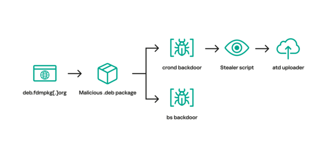

Password-stealing Linux malware served for 3 years and no one noticed
A download site surreptitiously served Linux users malware that stole passwords and other sensitive information for more than three years until it finally went quiet, researchers said on Tuesday.
The site, freedownloadmanager[.]org, offered a benign version of a Linux offering known as the Free Download Manager. Starting in 2020, the same domain at times redirected users to the domain deb.fdmpkg[.]org, which served a malicious version of the app. The version available on the malicious domain contained a script that downloaded two executable files to the /var/tmp/crond and /var/tmp/bs file paths. The script then used the cron job scheduler to cause the file at /var/tmp/crond to launch every 10 minutes. With that, devices that had installed the booby-trapped version of Free Download Manager were permanently backdoored.
After accessing an IP address for the malicious domain, the backdoor launched a reverse shell that allowed the attackers to remotely control the infected device. Researchers from Kaspersky, the security firm that discovered the malware, then ran the backdoor on a lab device to observe how it behaved.
“This stealer collects data such as system information, browsing history, saved passwords, cryptocurrency wallet files, as well as credentials for cloud services (AWS, Google Cloud, Oracle Cloud Infrastructure, Azure),” the researchers wrote in a report on Tuesday. “After collecting information from the infected machine, the stealer downloads an uploader binary from the C2 server, saving it to /var/tmp/atd. It then uses this binary to upload stealer execution results to the attackers’ infrastructure.”

After searching social media posts that discussed Free Download Manager, the researchers found that some people who visited freedownloadmanager[.]org received a benign version of the app, while others were redirected to one of the following malicious domains that served the booby-trapped version.
- 2c9bf1811ff428ef9ec999cc7544b43950947b0f.u.fdmpkg[.]org
- c3a05f0dac05669765800471abc1fdaba15e3360.u.fdmpkg[.]org
- c6d76b1748b67fbc21ab493281dd1c7a558e3047.u.fdmpkg[.]org
- 0727bedf5c1f85f58337798a63812aa986448473.u.fdmpkg[.]org
It’s unclear why some visitors received the non-malicious version of the software and others were redirected to a malicious domain. The malicious redirects ended in 2022 for unknown reasons.
The backdoor is an updated version of malware tracked as Bew, which was published in 2014. Bew was one of the components used in an attack in 2017. The stealer called by the backdoor was installed in a 2019 campaign after first exploiting a vulnerability in the Exim Mail Server.
“While the campaign is currently inactive,” the researchers wrote, referring to the recent incident, “this case of Free Download Manager demonstrates that it can be quite difficult to detect ongoing cyber attacks on Linux machines to the naked eye.” They added:
The malware observed in this campaign has been known since 2013. In addition, the implants turned out to be quite noisy, as demonstrated by multiple posts on social networks. According to our telemetry, victims of this campaign are located all over the world, including Brazil, China, Saudi Arabia and Russia. Given these facts, it may seem paradoxical that the malicious Free Download Manager package remained undetected for more than three years.
- As opposed to Windows, Linux malware is much more rarely observed;
- Infections with the malicious Debian package occurred with a degree of probability: some users received the infected package, while others ended up downloading the benign one;
- Social network users discussing Free Download Manager issues did not suspect that they were caused by malware.
The post offers a variety of file hashes and domain and IP addresses that people can use to indicate if they’ve been targeted or infected in the campaign, which the researchers suspect was a supply chain attack involving the benign version of Free Download Manager. The researchers said people running the freedownloadmanager[.]org site didn’t respond to messages notifying them of the campaign. They also didn’t respond to an inquiry for this post.